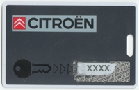

Programming new keys
Citroën
When matching new keys to the car, all keys - old and new - MUST be to hand for programming. Every key needs to be re-programmed.
Coding the keys - step-by-step procedure:
Read out, repair and delete possible fault codes.
Collect together all the keys that are to be re-programmed/used with the vehicle.
Scratch the card to reveal the security code

Enter the security code as shown on the code card. Press OK and wait for acknowledgement.
Enter the number of keys to be programmed for the system. Press OK and wait for instructions.
Programming of keys for the system ends with synchronisation of remote controllers for the central locking.
Synchronising the remote controls - step-by-step procedure:
Carry out the above procedure to code keys for the system.
When the last key has been programmed, leave the ignition switched on.
Press and hold the lock button on the remote control for ten seconds. Do this for all keys that have remote control.
Switch off the ignition.
Wait for a few seconds.
All the remote controls are now synchronised.